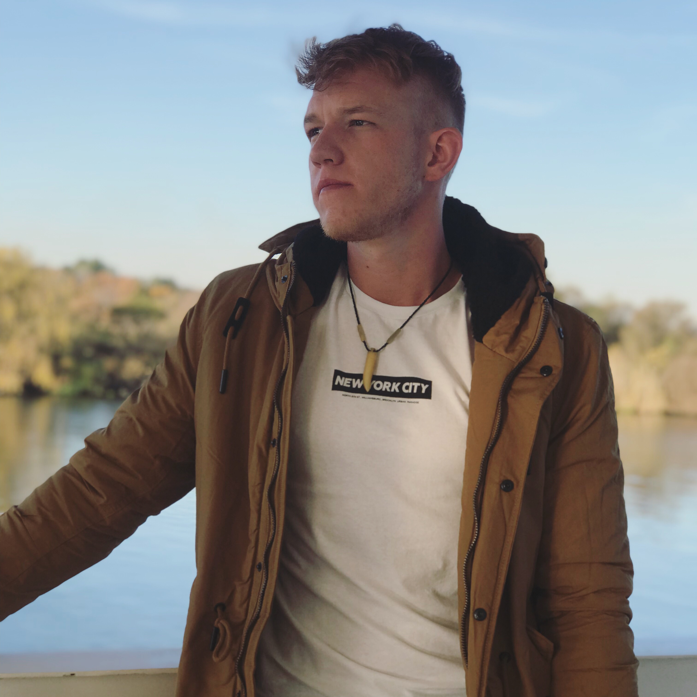

+27 78 845 9260 brandon@gmail.com
Internship
Student Assistant
Bachelor of Science, Information Technology Graduation Date: Dec 2025
NQF Level 5, Live Performing Arts Graduation Date: Dec 2021
Project Manager
Technical Tools I know : Python, Java, C++, Git, HTML, CSS, JS, TS, NodeJS, MongoDB, Supabase
Soft Skills I have : Communication, Teamwork, Problem Solving, Time Management, Leadership